Artículos
Artículos de hidrología, geotecnia e IA local — migrados desde LinkedIn y ampliados con datos, código, vídeo y apps.
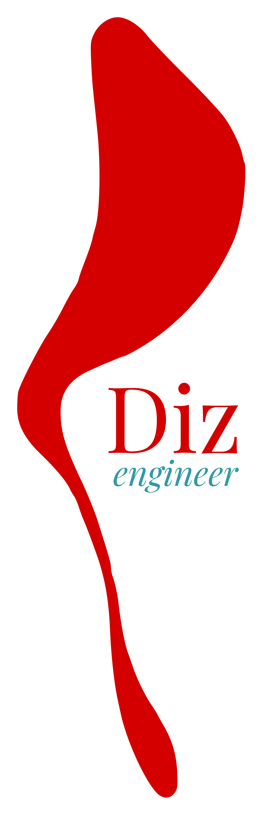
Uno de los temas más recurrentes en las obras lineales en un país montañoso como el nuestro es el de los túneles. Y para abordarlos con unas mínimas garantías en el ejercicio profesional tendrás que echar mano no sólo de los Jiménez Salas o los Ingeo-Túneles, sino recurrir a las fuentes originales cuando sea necesario, o sea, a las tesis de los autores que a menudo dan nombre propio a las formulaciones existentes. En otras épocas esto no era tan sencillo, y tenías que contar con la ayuda de algún catedrático o, si había suerte, con la biblioteca del Colegio. Pero cualquiera que haya revisado los documentos originales, a menudo se encuentra una desagradable sorpresa: las extensas y complejas formulaciones que se desarrollan, por lo general, acaban en fórmulas con errores que casi nunca son corregibles porque casualmente se han omitido algunas hipótesis intermedias sin cuya consideración es imposible llegar al resultado final…
Alguien dirá: —bueno, eso puede ocurrir, es accidental—. Pues sí, y no le faltaría razón si no fuera porque no ocurre rara vez, sino prácticamente siempre. Y lo curioso es que esto que ya me encontré hace más de 25 años, sigue pasando a día de hoy. Es como un extraño y curioso distintivo de calidad, como cuando el escritor Eugenio d’Ors le preguntaba a su correctora si había entendido su escrito, y si decía que “sí”, le mandaba tirarlo a la papelera. Así que la frustración cuando estudiabas estos temas por tu cuenta era enorme: después de seguir largos y complejos desarrollos físico-matemáticos, intuir hipótesis simplificadoras para la resolución de algunas ecuaciones imposibles de resolver sin ellas (aunque los ordenadores ya ayudaban, no era como actualmente) y trabajar en la solución final, cuando la ponías en práctica o la representabas gráficamente te llevabas la gran decepción: aquello no casaba con ningún caso real que tuvieras contrastado, ni mucho menos con lo deducido en la tesis de referencia.
Es conocido el caso comentado años después por Melis Maynar sobre la curva característica de la Dra. Mary Duncan Fama, cuya rama plástica presentaba un gap respecto a la elástica precisamente en el punto de unión, el correspondiente a la presión crítica de la cavidad, y que él lo achacaba generosamente a no haber entendido cómo lo calculaba ella. Este es sólo uno de los múltiples casos —ya digo, raro es que todo sea correcto en una tesis que se precie—…
Y hablando de curvas características, y dejando el resto para mejor ocasión, desarrollé hace ya muchos años una hoja de cálculo para la graficación de las Curvas Características GRC (ground reaction curve) de una excavación en túnel y la obtención de sus parámetros fundamentales, así como las correspondientes al sostenimiento en función del pase de avance de la excavación, basado en las curvas LDP (longitudinal displacement profile) inicialmente de Panet (1996) y Chern (1998); años después pude incorporar las de Vlachopoulos & Diederichs (2009).
Obviando las formulaciones y sus desarrollos, que pueden hoy día buscarse con mucha más facilidad, sí conviene repasar primero al menos qué fundamentos deben tenerse para entender el proceso final al que un ingeniero se enfrenta con la excavación de un túnel:
Y finalmente se llega, tras ese arduo camino, a la extensión de la solución elástica del anillo de pared gruesa y los análisis de Terzaghi (el Theoretical, 1943) para el estudio del anillo plástico en el contorno del túnel y la curva de convergencia del terreno, así como la línea característica del sostenimiento, tanto en suelos cohesivos como friccionantes: Fenner, Pacher, Von Rabcewicz, etc. Destacan aquí las que seleccioné para mi script final:
Sobre la regla de flujo, si bien se ofrece la dilatancia ψ del terreno como un parámetro a introducir por el usuario con independencia de su ángulo de fricción φ, conviene observar que prácticamente la totalidad de los casos que afectan a la mecánica de suelos se comportan con regla de flujo no-asociada (ψ < φ).
Vamos a ver un ejemplo de lo que ofrece la web-app que mi sobrino ha recuperado y tuneado, según él. Y para eso nos basaremos en un ejemplo del Máster MUIECM — RS2 — Caso Práctico (GeotecniaICCP, ETSI Canales, Caminos y Puertos), de forma que podamos comparar resultados; para no abrumar tomaremos sólo una de las 4 curvas del método convergencia-confinamiento, en este caso la solución de Carranza-Torres (2004) del modelo de terreno tipo Hoek-Brown para rocas, basado en el índice GSI (Geological Strength Index).
En el ejemplo se usa una sección de túnel ferroviario de Alta Velocidad de aproximadamente 15 metros de ancho:
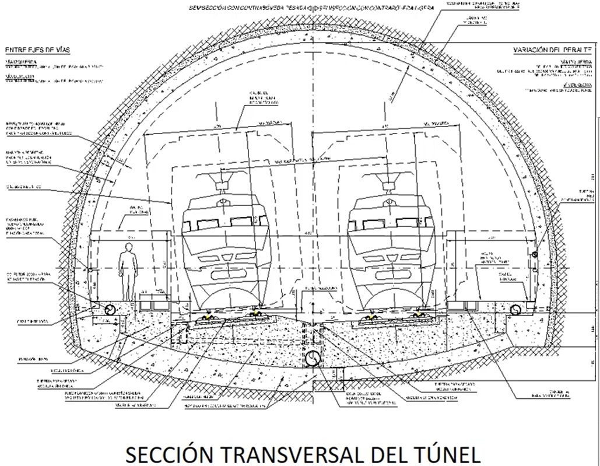
que se excavará en avance y destroza; se deduce un radio equivalente a la sección de avance de 4,3 m. El resto de parámetros del terreno pueden introducirse con mucha facilidad, contando con las ayudas típicas para parametrización usual.
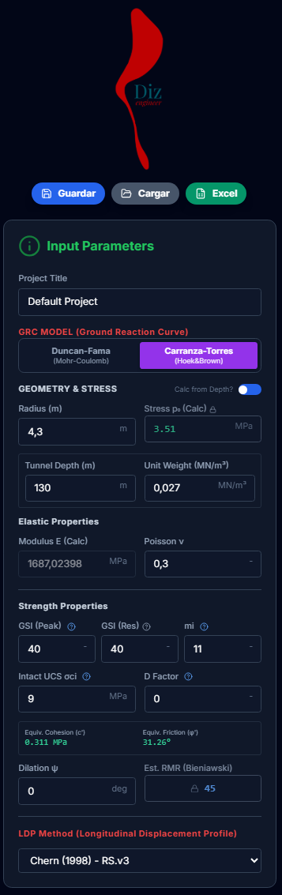
Introduciendo estos parámetros enseguida obtenemos la GRC elegida, donde además, el desplazamiento del ratón nos va dando valores de las curvas en vivo; cosas admirables de las nuevas tecnologías. Vemos además que disponemos de ejes dobles en X y triple en Y:
Además, se representa la curva del Radio Plástico a la escala adecuada para que comience a crecer a partir de la Presión Crítica (Pcr) (separación de la rama elástica verde con la plástica en rojo): en la parte elástica coincidirá con el radio del túnel (en el eje Y terciario).
También podemos ver la línea de desplazamiento (mm)/convergencia (%) en el frente de excavación, según el modelo LDP seleccionado:
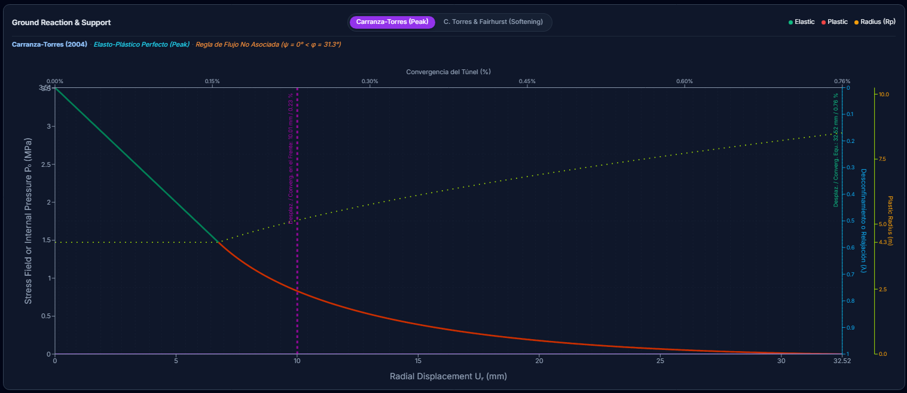
También accedemos ya a los primeros parámetros fundamentales antes de colocar sostenimiento:
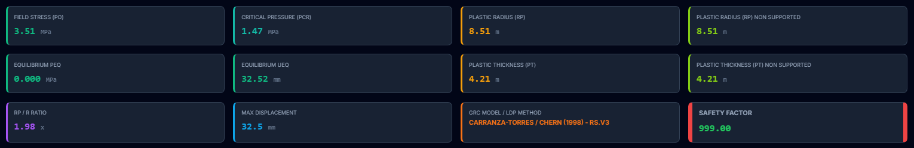
Podemos ver:
Si nos planteamos la modelización en software de elementos finitos (RS2, Plaxis, Flac, etc.), es usual plantear varias fases de excavación que permitan primero simular el estado tensional del terreno antes de excavar (estado inicial) y posteriormente una fase que representa un pase de avance de la excavación y la relajación que se produce en el terreno circundante del túnel, justo antes de colocar el sostenimiento. Esto suele simularse mediante lo que se conoce como “Efecto Frente”, y se resuelve con la colocación de una presión interior equivalente en el túnel, cuyo valor debemos calcular previamente. Normalmente requiere salir del entorno del software y tratar el tema aparte para, una vez obtenido su resultado, volver al software y representarlo.
Toda esta incomodidad ha sido resuelta directamente en la web-app, en un apartado dedicado al efecto frente, y que permite obtenerlo todo de manera automática introduciendo el pase de avance y la LDP elegida. Por ejemplo, para Vlachopoulos vemos que la curva naranja seleccionada se corresponde a la de ratio Rp/R ~ 2 (la app representa la exacta, de valor Rp/R = 1,98); podemos, además, graficar el punto, y obtendremos el factor de carga (1−λ) a introducir en el software FEM como presión interior: 0,149 ~ 0,15 (en el caso del Máster MUIECM — RS2 obtenían 0,14 con interpolaciones cuasi-visuales más groseras, teniendo que acudir a exportar datos a un Excel aparte).
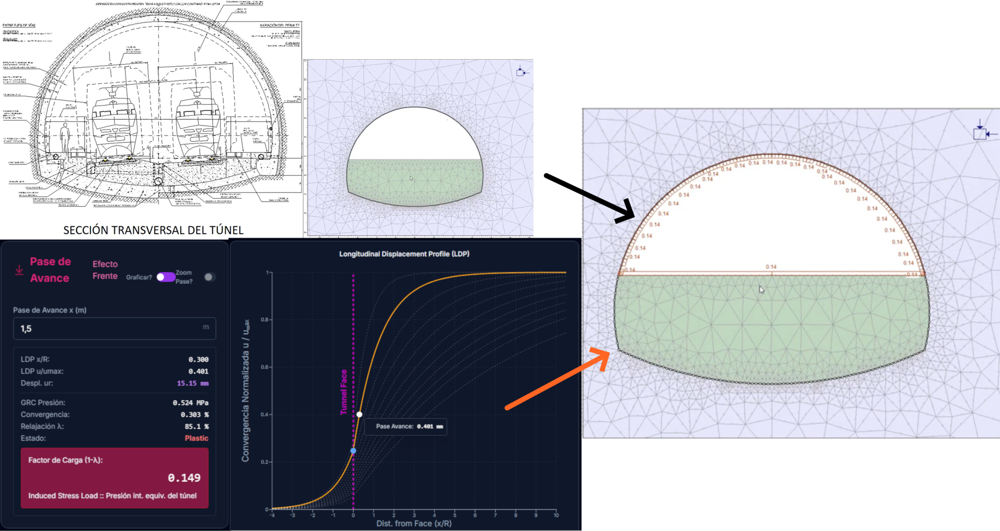
Aparte de esta fantástica herramienta integrada, la web-app nos proporciona ya una serie de instrumentos de interpretación y presentación de resultados:
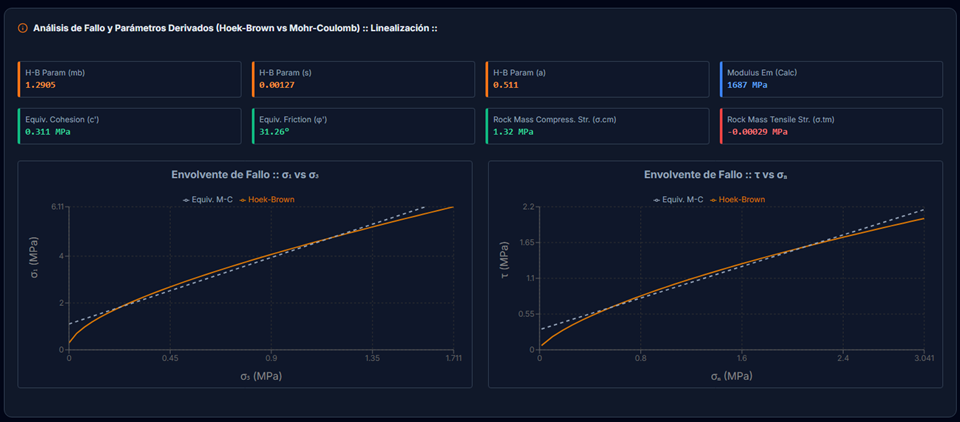
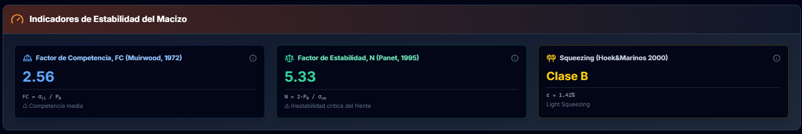
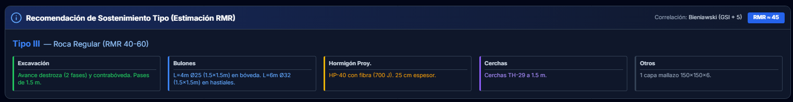
dando además una imagen visual de dicha recomendación, lo que facilita su interpretación, y que puede ser descargada en formato CAD:
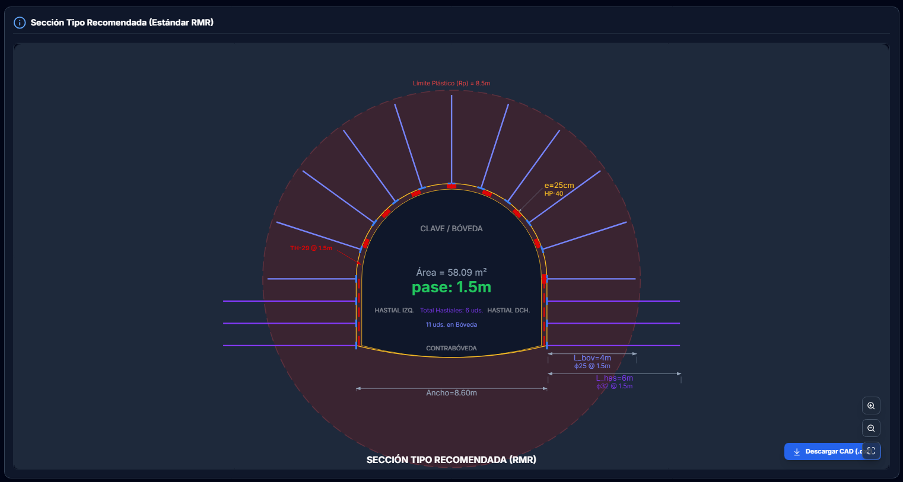
Entonces podemos empezar a diseñar el sostenimiento basándonos en la recomendación: tenemos disponibles las mismas opciones que RockSupport, dando valores perfectamente asimilables con este software:
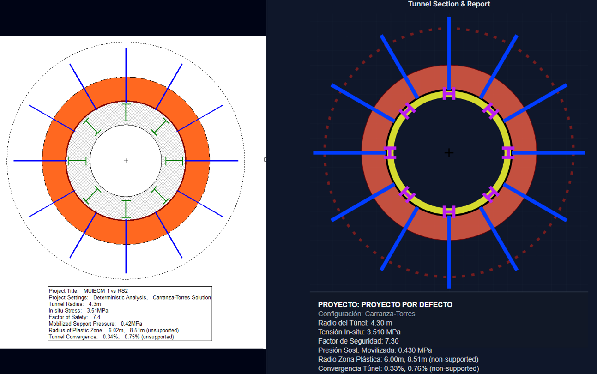
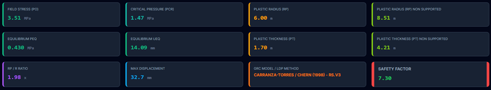
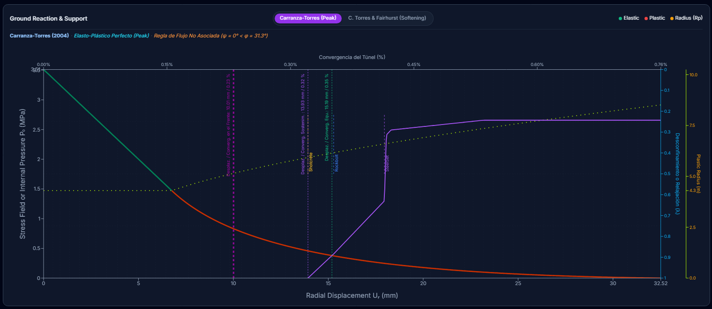
pero además, nos permite obtener y estudiar (incluso variando los parámetros para analizar su sensibilidad):
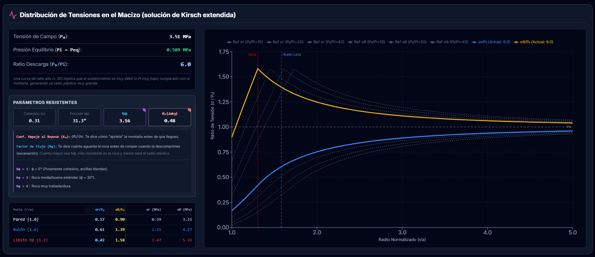
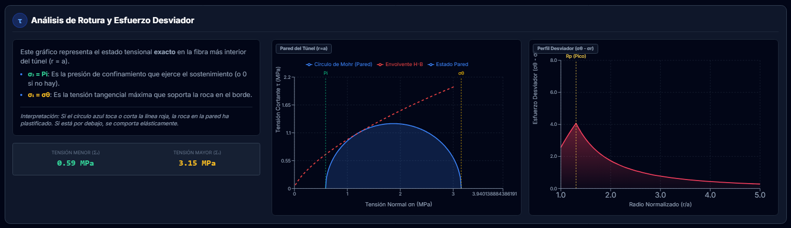
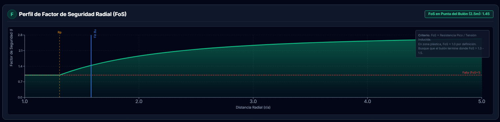
La solución final también se representa en una sección adecuada para ver su grado de coincidencia con la recomendada y, desde luego, para justificar ajustes sobre la misma de forma técnica y precisa…, todo lo preciso que se puede ser en este campo (*).
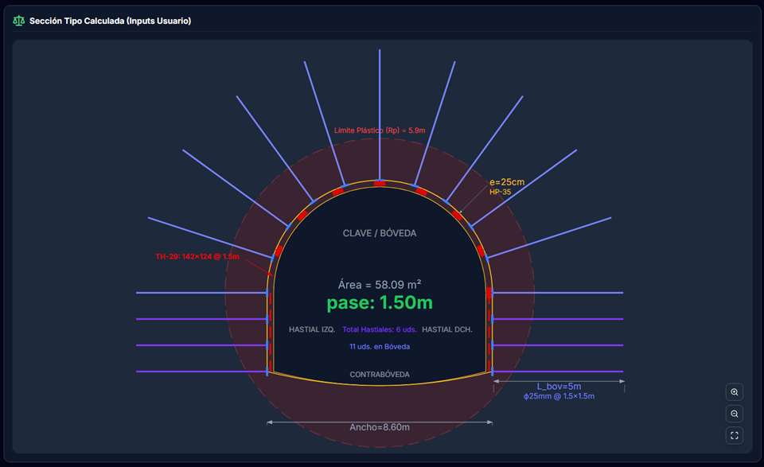
(*) Recordemos las muchas advertencias de los grandes teóricos sobre las cautelas que hay que tener al dar validez a los cálculos desarrollados, por la gran dispersión que presentan las diferentes formulaciones para una misma solución…
Espero que os haya gustado, y que inspire a mi sobrino en sus futuras tesis, ¿por qué no?